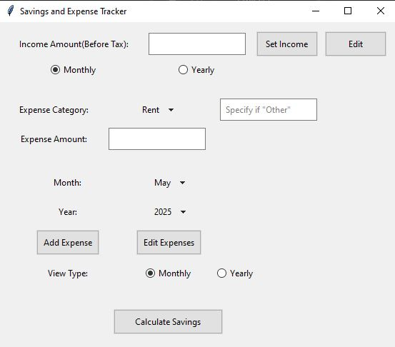
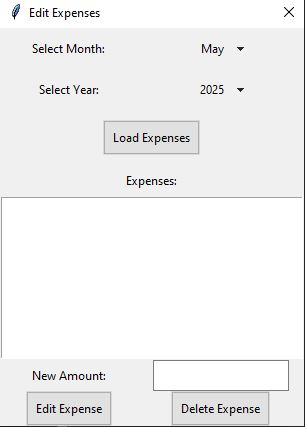

Creating a Budget Calculator.
If you would like to check out my CNSA-266 Python Expense Calculator Project. Be aware it is not design focused so it looks older. I will try to update the design UI later on down the line. There are other updates that I would like to make to this project like variable number calculations. I designed this project to help me budget my spending. I want to improve this budget calculator to help me no matter where I am. I will improve as time goes on and update my GitHub repo to contain a cleaner design.
This was a fun project for me.
The button below that goes to my Expense-Tracker Repository in GitHub.
This where you can try it for yourself:

